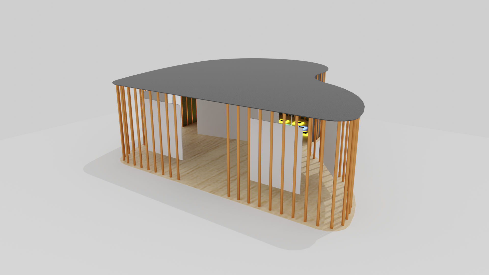

Sound Museum
- Category: Spacial Design
- Team Size: 2
- Year: 2020
The goal of this project was to create a mobile museum for the GIDE (Group for Internation Design Education) 2019/2020 exhibition.
"(...) teams explore the future of the museum as a mobile experience for the 21st century. Develop viable concepts and prototypes for a new MOBILE MUSEUM for one of the following scenarios: a mobile-space, a service design experience, an interactive object."
Anatomical Measurements
Having never worked on spacial design, we were told to start by taking measurements of the human body in different common positions to get an idea of how tall the structure should be, how much space it should have, how high the displays should be if they're supposed to be seen while standing, etc.

Drawings of my partner for this project, for measuring.
Theme and Structure
We decided that we wanted our museum to be about music, and thought it'd be interesting to have an interactive part to it, in this case, a launchpad-type zone where people could step on tiles to play a looped melody. This part would also feature a projection of waving lines.
First, we'd divide the museum into two parts - one for the displays and one for the launchpad. We'd also assign colors to the instrument categories so that we could match them with the sound of each launchpad tile.
When it comes to the structure itself, we tried finding shapes that could accommodate both parts of the project but nothing felt right until someone mentioned a piano. This was perfect, it had a big open area for the displays at the front and a smaller area at the back that we could use for the interactive part, so we settled with it.

1 - Assigning colors to the instrument families; 2 - Figuring out the displays; 3 - Launchpad inspired interactive zone; 4 - Structure shape.

One of the final iterations of the museum and the plan of the final museum with measurements.
The 3D Model
Having figured out the structure, we moved the 3D model to blender to apply textures and create the final renders that would be used for the exhibition poster. Being a mobile museum, we chose materials that could be transported and assembled easily. The floor and ceiling would be made of plywood with the ceiling being painted black, the cilinders surrounding the structure would be orange/copper coloured aluminium and the displays would be white-painted wood as well. The tiles for the launchpad would be 3D printed.

Ortogonal renders of the final model.
Renders of the final model from an inside perspective.
Final images and poster
After the model was done, all that was left to do was to make it look real, this means putting people in it, interacting with the museum. We also simulated the placement of the museum in real life, seen below.

Both parts of the museum, and the structure placed in real life.
The final image for the poster.